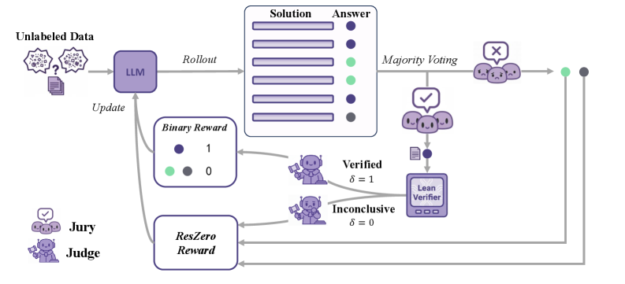
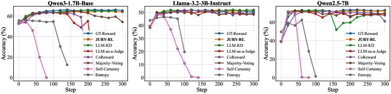

Rewards only majority-voted answers that a Lean formal verifier confirms, using Lean verification to gate label-free RLVR training.
Abstract
Reinforcement learning with verifiable rewards (RLVR) enhances the reasoning of large language models (LLMs), but standard RLVR often depends on human-annotated answers or carefully curated reward specifications. In machine-checkable domains, label-free alternatives such as majority voting or LLM-as-a-judge remove annotation cost but can introduce false positives that destabilize training. We introduce JURY-RL, a label-free RLVR framework that decouples answer proposal from reward disposal: votes from model rollouts propose a candidate answer, and a formal verifier determines whether that candidate can receive positive reward. Concretely, only rollouts matching the plurality-voted answer are rewarded when that answer is successfully verified in Lean. When verification is inconclusive, we invoke ResZero (Residual-Zero), a fallback reward that discards the unverified plurality proposal and redistributes a zero-mean, variance-preserving signal over the residual answers. This design maintains a stable optimization gradient without reinforcing unverifiable consensus. Across three backbone models trained on mathematical data, JURY-RL consistently outperforms other label-free baselines on mathematical reasoning benchmarks and transfers competitively to code generation and general benchmarks. It attains pass@1 performance comparable to supervised ground-truth training, with superior generalization demonstrated by higher pass@k and response diversity.
Problem
Standard RLVR for LLM reasoning depends on human-annotated answers or carefully curated reward specifications. Label-free alternatives such as majority voting or LLM-as-a-judge can introduce false positives that destabilize training.
Approach
JURY-RL decouples answer proposal from reward disposal: majority votes from model rollouts propose a candidate answer, and a Lean formal verifier determines whether that candidate is correct. Verified correctness provides a positive reward to supporting rollouts; when verification is inconclusive, a residual zero-reward fallback is used. The system integrates an autoformalization pipeline to translate informal mathematical answers into Lean statements for machine-checked verification.

Figure 1 : The JURY-RL workflow: Votes Propose, Proofs Dispose. For each problem, a majority vote from multiple rollouts ( Jury ) proposes a candidate answer. A Lean verifier ( Judge ) then disposes the reward. If the answer is Verified ( \delta=1 ) , supporting rollouts receive a positive reward, directly linking the update to successful formal verification. Conversely, when verification is Incon
Results
JURY-RL matches or outperforms ground-truth reward baselines on math reasoning benchmarks across three model scales (1.7B, 3B, 7B) without requiring any labeled data. On Qwen3-1.7B-Base, it achieves an average score of 36.54 across nine benchmarks compared to 35.56 for ground-truth reward, and scales to test-time training settings on Qwen2.5-7B and Qwen2.5-14B.

Figure 3 : Accuracy on MATH5000 Validation set over training steps.